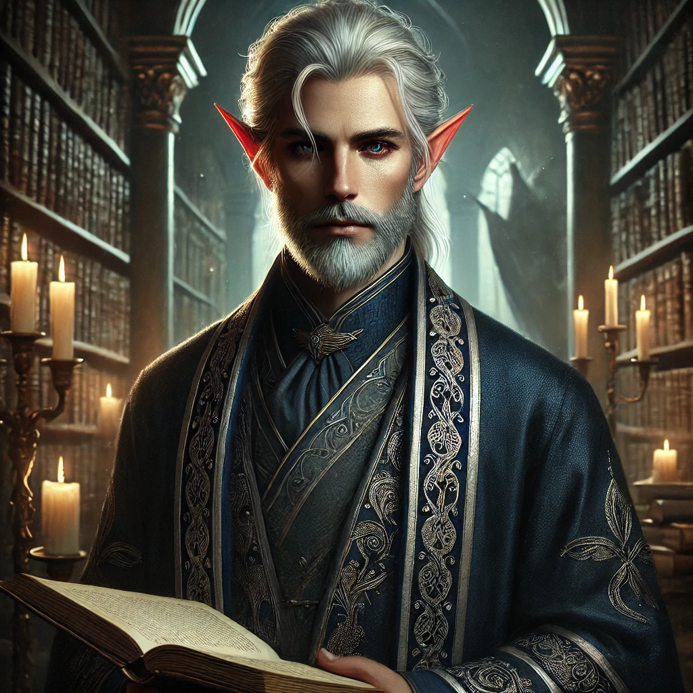

Postavení: Generál Sylvadorské armády.
Schopnosti: Mistrovské ovládání meče a sekery, bojová taktika.
Charakter: Neochvějný, odhodlaný, loajální k Sylvadoru.
Když Drystan dorazil na břehy Sylvadoru, byl neznámým cizincem bez domova a bez minulosti. Získal si obživu prací v přístavu, kde rychle prokázal svou fyzickou sílu a neochvějné odhodlání. Brzy se stal součástí městské milice, kde vynikal v boji a taktice. Jeho přirozená autorita a neústupnost mu zajistily rychlý postup v hierarchii.
Drystanova chladná efektivita a strategické myšlení přitáhly pozornost vojenských velitelů, kteří mu nabídli místo v armádě. S každou bitvou rostl jeho věhlas, až se dostal do blízkosti samotné královny Myriel. Své místo si zajistil nejen vynikajícími bojovými schopnostmi, ale i svou loajalitou k Sylvadoru, který přijal jako svůj nový domov.
Navzdory své pozici zůstává Drystan záhadnou osobností. Nikdo neví, odkud skutečně přišel, a on sám se k tomu nevyjadřuje. Jeho chladné, analytické myšlení a odhodlanost v boji ho činí nepostradatelným, ale zároveň vzbuzují u některých obavy. Jeho vztah s královnou Myriel je profesionální, avšak existují náznaky, že mezi nimi panuje hlubší vzájemné porozumění.
Dnes je Drystan hlavním velitelem Sylvadorské armády a zajišťuje bezpečnost království před vnějšími i vnitřními hrozbami. I přes svůj nekompromisní přístup k válčení si získal respekt svých mužů, kteří ho následují s absolutní oddaností.
Postavení: Královský rádce, učitel prince Adrisa, archivář a mistr strategie.
Schopnosti:
Charakter: Nathaniel je klidný, metodický a přemýšlivý. Jeho mysl je jako rozsáhlá knihovna, plná znalostí a zkušeností. Přestože působí jako oddaný služebník Sylvadoru, je těžké poznat jeho skutečné motivy. Nikdy nejedná unáhleně, každé jeho slovo i čin mají hlubší význam. Přes svou zdrženlivost dokáže být ostrý a neústupný, pokud jde o ochranu královské rodiny a principů, které uznává.
Nathaniel se poprvé objevil u sylvadorského dvora před více než třiceti lety. O jeho původu se vedou debaty – některé zdroje tvrdí, že pochází ze vzdáleného království za horami, jiní říkají, že byl kdysi součástí tajného řádu, který střežil zakázané vědění. Přesto se brzy stal jedním z nejrespektovanějších učenců a rádců, který svým nadhledem a znalostmi ovlivňoval směřování říše.
Byl hlavním učitelem prince Adrisa, kterého vedl nejen v historii a diplomacii, ale také ve strategii a magii. I když se zdá, že Nathaniel je loajální k vládnoucí dynastii, existují náznaky, že sleduje i vlastní cíle. Někteří tvrdí, že uchovává informace, které by mohly otřást celým Sylvadorem – pravdy, které se nikdy neměly dostat na povrch.
Když došlo k falešnému obvinění Kiary Watercott a zmizení relikvie života, Nathaniel zůstal navenek neutrální, ale pozorovatelé si všimli, že jeho zájem o situaci byl větší, než by odpovídalo jeho obvyklému odstupu. Říká se, že v archivech našel záznamy, které by mohly vnést světlo do celé záležitosti, ale zatím je drží v tajnosti.
Postavení: Vládnoucí arcidruidka Sylvadoru.
Schopnosti: Mistryně druidismu, spojení s přírodou a léčení.
Charakter: Moudrá, klidná, pevně věřící v rovnováhu.
Myriel se poprvé objevila v Sylvadoru jako záhadná mladá druidka, která nesla hluboké znalosti přírody a starodávných rituálů. Její původ zůstává nejasný, ale brzy se stala jednou z nejvlivnějších osobností v lesní říši. Díky svému charismatu a schopnosti sjednotit roztříštěné druidické kruhy se dostala až na samotný vrchol hierarchie.
Během svého vzestupu Myriel prokázala neobyčejnou sílu a odhodlání ochránit Sylvador nejen před vnějšími hrozbami, ale i před těmi, kdo by chtěli manipulovat s přírodní rovnováhou pro své vlastní cíle. Její spojení s lesy a bytostmi přírody je natolik silné, že někteří věří, že není obyčejnou elfkou, ale vtělením samotného lesa.
Jako vládnoucí arcidruidka udržuje křehkou rovnováhu mezi přírodní magií a politickými intrikami. I když působí klidně a vyrovnaně, nikdy nenechává své nepřátele podceňovat její sílu. Zůstává záhadnou postavou, která zná tajemství dávno zapomenutých sil a starých dohod, jež drží Sylvador v bezpečí.
Postavení: Dědic Sylvadoru.
Schopnosti: Talent pro magii, diplomatické schopnosti, bojový výcvik.
Charakter: Ctižádostivý, inteligentní, někdy impulzivní.
Adris vyrůstal jako budoucí dědic trůnu, vychováván mentorem Nathaniellem v historii, diplomacii a tradicích Sylvadoru. Přestože se připravoval na roli vládce, jeho duše toužila po něčem víc než jen po řízení království. Bojový výcvik pod vedením generála Drystana z něj udělal schopného bojovníka, avšak jeho skutečná síla spočívá ve strategii a intrikách.
Během výcviku se setkal s Kiarou Watercott, přezdívanou Liška. Jejich vzájemná přitažlivost byla nepopiratelná, ale zároveň zakázaná. Když byla Kiara falešně obviněna z krádeže relikvie života a donucena uprchnout, Adris věděl, že je nevinná. Pravda však nemohla být odhalena – příliš mnoho mocných osob bylo zapleteno v této záhadě..
Adris nyní žije v rozpolcení – připravuje se na vládu, zatímco v skrytu plánuje očistit Kiarino jméno a odhalit pravé nepřátele království. Jeho rozhodnutí mohou změnit osud Sylvadoru, ale jeho vlastní budoucnost je stále nejistá.
Postavení: Nejlepší špeh Sylvadoru, bývalá členka královské gardy.
Schopnosti: Mistryně plížení, zpravodajství a boje s dýkou.
Charakter: Odvážná, loajální, ale nedůvěřivá a mazaná.
Kiara byla sirotek, který vyrůstal v ulicích Sylvadoru, kde se naučila přežít díky své chytrosti a hbitosti. Její talent na plížení a špehování brzy přitáhl pozornost královny Myriel, která ji vzala pod svou ochranu a začlenila ji do královské gardy.
V průběhu let se Kiara stala nepostradatelnou členkou dvora, tajně plnící mise, které byly příliš riskantní pro běžné agenty. Její důvěra v královskou rodinu však byla zničena, když byla falešně obviněna z krádeže relikvie života. Aby ochránila Adrisa a pravdu, byla nucena uprchnout.
Kiara nyní žije v exilu, neustále pronásledovaná lovci odměn a nepřáteli, kteří chtějí její smrt. Její jediným cílem je očistit své jméno a odhalit skutečné viníky – bez ohledu na cenu.